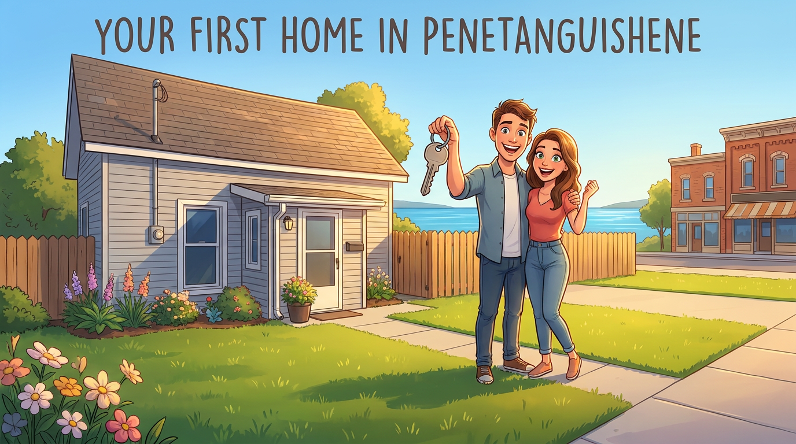

Buyer's Guide · Penetanguishene

If you're asking how do I start the home buying process in Penetanguishene, Ontario, the honest answer is: start with the local market and your finances, in that order. Penetanguishene sits at the southern tip of Georgian Bay — a small waterfront town drawing buyers from Toronto, Brampton, and beyond with its affordability, proximity to the water, and genuine community feel. For many, it's a first home purchase, and the process feels more complicated than it needs to be.
Ontario's buying rules — tiered down payments, land transfer tax, closing cost surprises — catch a lot of first-timers off guard, and the specifics of a smaller Georgian Bay market add another layer. This guide gives you the practical roadmap, from the first financial steps through to closing day.
How do I start the home buying process in Penetanguishene, Ontario?
The short answer: understand the local market first, then sort your finances and mortgage pre-approval before you tour a single listing. The sections below walk through each stage of the Penetanguishene real estate process in the order you'll actually encounter them.
What Penetanguishene's housing market looks like right now
Where prices sit and what your budget unlocks
The May 2026 median sold price in Penetanguishene landed at $634,875, consistent with the March 2026 average of $629,000. That range buys you genuine detached housing, older homes with character and solid bones, and properties within walking distance or a short drive of the waterfront. Compare that to urban southern Ontario centres where the same budget can struggle to find a semi-detached in a livable neighbourhood, and the value proposition becomes clear. You're not buying a condo compromise here; you're buying a full home in a community with its own identity.
For up-to-date listings and market statistics specific to Penetanguishene, see the local Penetanguishene market page.
How inventory levels shape your experience as a buyer
March 2026 data showed 50 active listings and 7.14 months of inventory in Penetanguishene. That figure matters: months of supply tells you how long it would take to sell every current listing at the pace homes are moving. Anything above six months is a general industry guideline for a balanced-to-buyer-leaning market, which means less frantic competition and more room to negotiate. If you've been following Toronto headlines about bidding wars and waived conditions, you can set that anxiety aside. Penetanguishene gives first-time buyers time to think, do their due diligence, and move deliberately.
What this means before you start shopping
Understanding the local absorption rate before you tour homes helps you set a realistic offer range without guesswork. Desirable properties at the right price still sell quickly, even in a buyer-leaning market. The point isn't to make you complacent — it's to help you calibrate, so you're neither overpaying under pressure nor underoffering out of inexperience.
Getting your finances sorted: first steps in the Penetanguishene home buying process
Down payment minimums by purchase price in Canada
Canada's down payment rules are tiered, and they apply directly to what you'd pay in Penetanguishene. The minimum is 5% on the first $500,000 of the purchase price, then 10% on any amount between $500,000 and $1,499,999. For homes at $1.5 million or above, mortgage default insurance through CMHC is unavailable, so 20% down is required. Applied to Penetanguishene's median price of $634,875, the math works out to $25,000 on the first $500,000, plus $13,487.50 on the remaining $134,875, for a total minimum down payment of roughly $38,488. That's the floor you're working toward, before closing costs.
What lenders look at when they assess your application
Lenders assess four main areas: your income stability and employment history, your credit score and credit profile, your debt service ratios, and the property type itself. The GDS (Gross Debt Service) ratio measures your housing costs as a percentage of gross income; the TDS (Total Debt Service) ratio adds all your other debt obligations on top. Keeping your GDS below 32% and your TDS below 44% is the benchmark most lenders apply. A clean credit history and documented employment income will open more competitive rate options, including the current insured 5-year fixed rate sitting at approximately 4.09% as of June 2026.
Mortgage pre-approval in Penetanguishene: why it matters before you tour
Pre-qualification is an estimate based on numbers you self-report. Pre-approval is a lender's documented commitment based on verified income, assets, and a hard credit check. The difference is significant in practice. A motivated seller reviewing two offers will take a pre-approved buyer more seriously than a pre-qualified one, because pre-approval removes the question mark around financing. Securing mortgage pre-approval in Penetanguishene before you tour any properties also gives you a firm budget ceiling, which prevents the common mistake of falling in love with a home that was never actually within reach.
Ontario first-time buyer programs that cut your upfront costs
Provincial and federal programs available to Penetanguishene buyers
Four programs apply directly to a first-time purchase in Penetanguishene. The Ontario land transfer tax refund provides up to $4,000 back for qualifying first-time buyers. On a $634,875 purchase, the Ontario land transfer tax comes to approximately $9,475 before the refund, leaving a net tax payable of around $5,475 after the full $4,000 is applied. The federal First-Time Home Buyers' Tax Credit delivers up to $1,500 as a non-refundable credit on your income tax return. The Home Buyers' Plan lets you withdraw up to $60,000 from your RRSP tax-free toward a qualifying purchase. The First Home Savings Account allows up to $40,000 in tax-free savings specifically earmarked for a first home, with annual contribution limits applying. One clarification for buyers relocating from Toronto: the Toronto municipal land transfer tax rebate does not apply in Penetanguishene. Only the provincial refund applies here, which is still meaningful, but it isn't doubled the way it would be inside city limits.
Details on the provincial rebate are available from the Ontario government; review the Ontario land transfer tax refund page to confirm eligibility and how to apply.
New build vs. resale: how the incentives change
If you purchase a newly built home, you may qualify for the GST/HST new housing rebate and Ontario's expanded new-home HST relief, which took effect April 1, 2026, and can eliminate the provincial portion of HST on eligible homes up to certain price thresholds. Resale buyers typically access the land transfer tax refund, the federal tax credit, and the RRSP and FHSA programs. Several of these are stackable, for example, combining your FHSA savings with the provincial LTT refund and the federal tax credit can meaningfully reduce the cash you need at closing. For a concise overview of options available to first-time buyers across Canada, see this summary of first-time home buyer programs. A qualified local agent familiar with the Penetanguishene housing market can help you identify which combination applies to your specific situation before you make an offer.
Why the agent you choose in Penetanguishene shapes the whole experience
What hyperlocal knowledge actually delivers for a buyer
Knowing a market means more than knowing the price range. It means understanding which streets hold their value through market cycles, which pockets are seeing increased buyer activity in 2026 based on sold data, and how to read a listing's days-on-market in the context of that specific neighbourhood. An agent with deep, street-level familiarity with Penetanguishene, Midland, Tay, and Tiny translates that knowledge directly into better offer strategy. When your agent can look at a listing and tell you whether it's priced fairly, aggressively, or optimistically based on comparable sales on the same block, that's not a generic service. That's local intelligence that changes negotiation outcomes.
Off-market opportunities and what you miss without a local connection
In smaller Georgian Bay communities, properties sometimes change hands before they ever appear on MLS. A well-connected local agent has the relationships and informal networks that surface these conversations early. In a market with around 50 active listings, access to even one off-market opportunity can be the difference between finding the right home this season and waiting another year.
What to ask a prospective agent before you commit
Before signing a buyer representation agreement, ask any agent these four questions directly:
- How many transactions have you completed specifically in Penetanguishene in the past 12 months?
- Can you show me recent sold comparables in the neighbourhoods I'm targeting, not just active listings?
- Do you have established relationships with local real estate lawyers, home inspectors, and mortgage brokers who know this market?
- Can I speak with a past buyer client who was purchasing in a similar price range?
The answers will tell you quickly whether you're working with a hyperlocal specialist or a generalist who has added the area to their coverage map from a Barrie or Toronto office.
Making an offer and protecting yourself through the process
How to structure a competitive offer on a Penetanguishene home
A well-structured offer includes four core components: the purchase price anchored to recent sold comparables (not asking prices), a deposit of typically 5% of the purchase price held in trust, your preferred closing date, and your conditions. In Penetanguishene's current balanced market, buyers generally have room to include conditions without losing the deal. Your agent's access to sold data, not just listed prices, is what grounds the offer price in reality and prevents you from overpaying or submitting an offer the seller has no reason to take seriously.
Conditions worth keeping and the timeline to closing
Two conditions protect you most as a first-time buyer. The financing condition gives you time to confirm your mortgage approval for this specific property after the offer is accepted. The home inspection condition gives you a licensed inspector's assessment of the home's condition before you're committed. A standard home inspection in Ontario typically costs between $400 and $700 for a detached home, covering the structure, roof, electrical, plumbing, HVAC, and visible deficiencies. Don't waive it to seem competitive in a market that isn't asking you to.
From accepted offer to closing day, most Ontario residential transactions run 30 to 90 days depending on the agreed date, with a conditional period of roughly 5 to 10 business days at the start for due diligence. This is followed by lawyer work, title searches, document signing, and final registration through Ontario's electronic land registration system.
Closing costs in Ontario: what to budget beyond your down payment
What you pay on closing day
Closing costs catch first-time buyers by surprise more often than almost anything else in the process. On a $634,875 purchase in Penetanguishene, you'll need to account for several line items: Ontario land transfer tax (net approximately $5,475 after the first-time buyer refund), legal fees from a real estate lawyer ($1,200 to $2,500 plus disbursements and HST), title insurance, a property tax adjustment where the seller has prepaid taxes beyond the closing date, and land registration fees. As a practical planning anchor, budgeting 2% to 4% of the purchase price for total closing costs beyond the down payment is a reasonable starting point. On a $634,875 home, that's roughly $12,700 to $25,400 set aside specifically for closing-day expenses.
For a clear breakdown of typical items that can appear on closing statements and how to plan for them, review a practical guide to closing costs.
Recurring costs to plan for from month one
Property taxes in Penetanguishene are calculated on the assessed value of the home multiplied by the municipal residential rate. The exact 2026 rate should be confirmed directly with the Town of Penetanguishene, as it shifts with each year's budget. Home insurance is another line item to price early; proximity to water and older construction, both common in Penetanguishene, can affect premiums, so get quotes before you finalize your budget. For utilities, request the utility history from the seller as part of your due diligence. Georgian Bay winters are real, and heating costs for an older detached home can vary significantly depending on the system and insulation. Buyers who plan these recurring costs before making an offer are far less likely to feel financially stretched after closing.
For recent municipal and provincial tax estimates you can use as a reference when budgeting, see the analysis of average 2026 property taxes in Ontario and Toronto.
Your next step toward buying in Penetanguishene
The home buying process in Penetanguishene becomes manageable when you take it one step at a time. The sequence is consistent: understand the local market, get your finances in order and secure a pre-approval, explore the first-time buyer incentives available in Ontario, structure a well-protected offer grounded in real sold data, and budget for closing costs before you're under contract.
None of those steps require you to be an expert before you start — just good information and a clear plan.
Frequently asked questions about starting the home buying process in Penetanguishene, Ontario
How do I start the home buying process in Penetanguishene, Ontario?
Begin by reviewing current market conditions and then securing mortgage pre-approval before you tour any properties. Once you have a confirmed budget, connect with a local agent who works specifically in the Penetanguishene area, review available listings and recent sold comparables, and submit a conditional offer when you find the right home. Your agent will guide you through the inspection period, financing confirmation, and final closing steps.
What is the minimum down payment for a home in Penetanguishene?
At the current median price of $634,875, the minimum down payment works out to approximately $38,488, 5% on the first $500,000 and 10% on the remaining amount above that threshold. This is separate from closing costs, which typically add another 2% to 4% of the purchase price.
Are there first-time buyer incentives available in Penetanguishene?
Yes. Ontario's land transfer tax refund (up to $4,000), the federal First-Time Home Buyers' Tax Credit (up to $1,500), the Home Buyers' Plan (up to $60,000 RRSP withdrawal), and the First Home Savings Account (up to $40,000) all apply to purchases in Penetanguishene. Several of these can be combined to reduce your upfront costs.
Is Penetanguishene a buyer's market right now?
Based on March 2026 data showing 7.14 months of inventory, Penetanguishene is sitting in balanced-to-buyer-leaning territory. That gives first-time buyers more room to include protective conditions and negotiate on price than you'd find in tighter urban markets.
This guide is general information, not financial, legal, or tax advice. Figures (prices, rates, taxes, program limits) reflect the dates noted and change over time — confirm current details with your lender, lawyer, and the Town of Penetanguishene before making decisions.